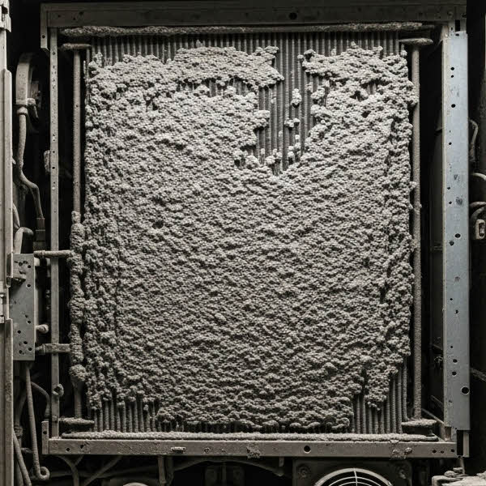
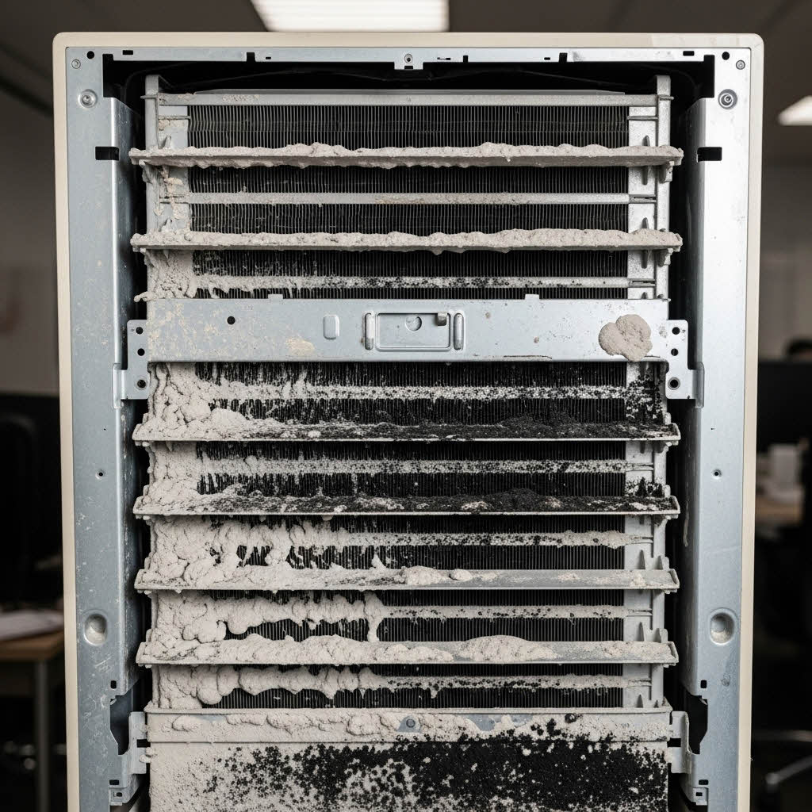
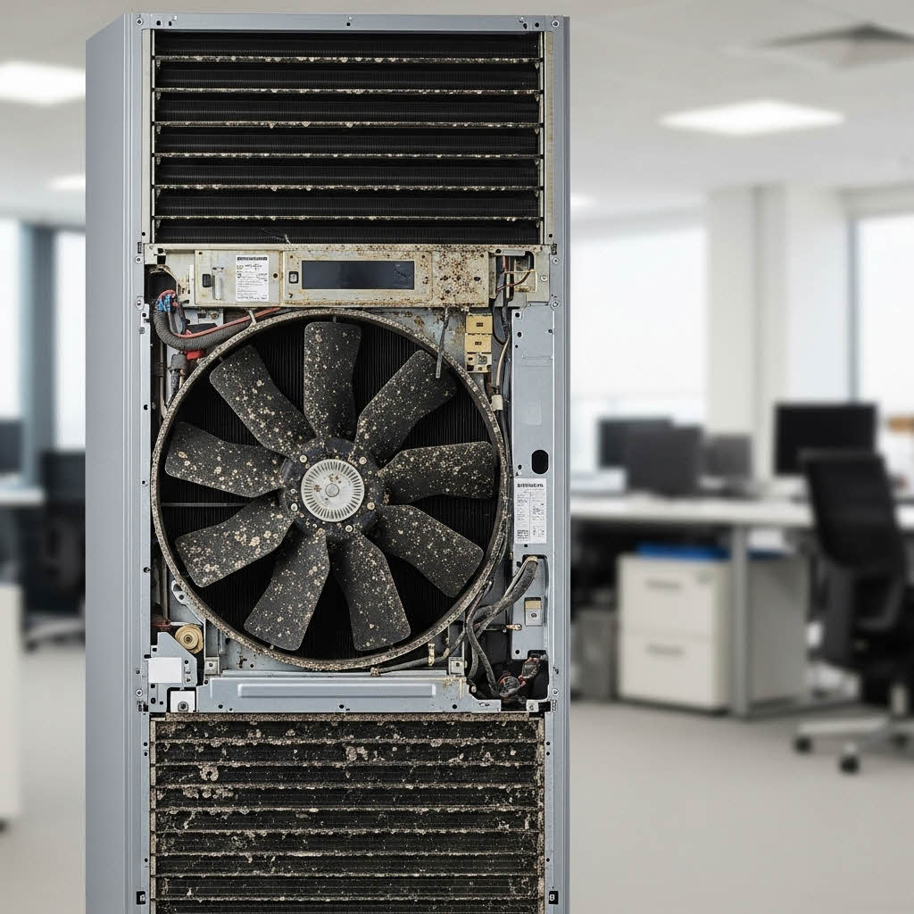
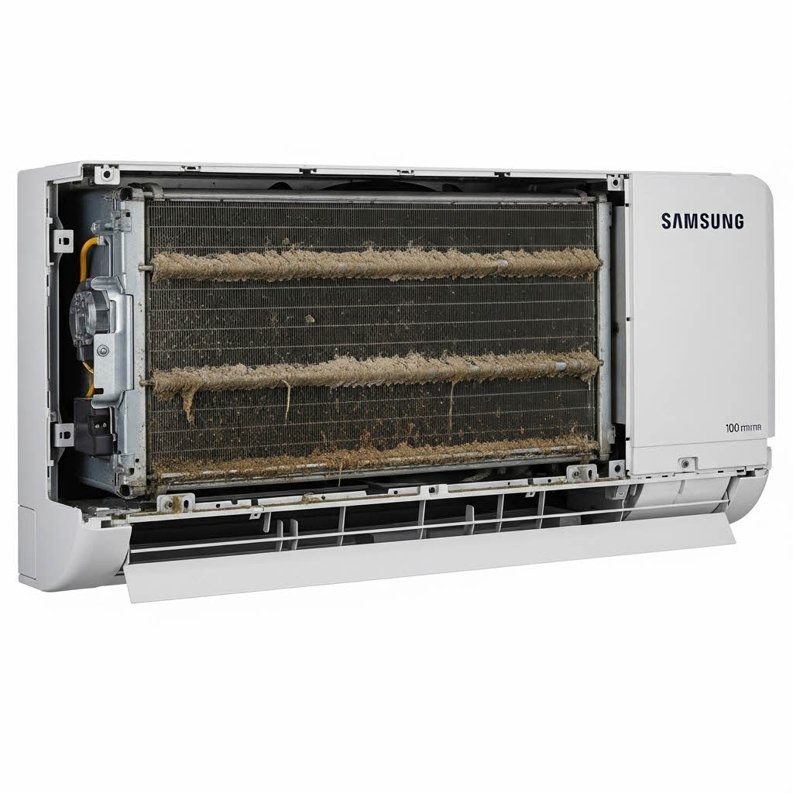
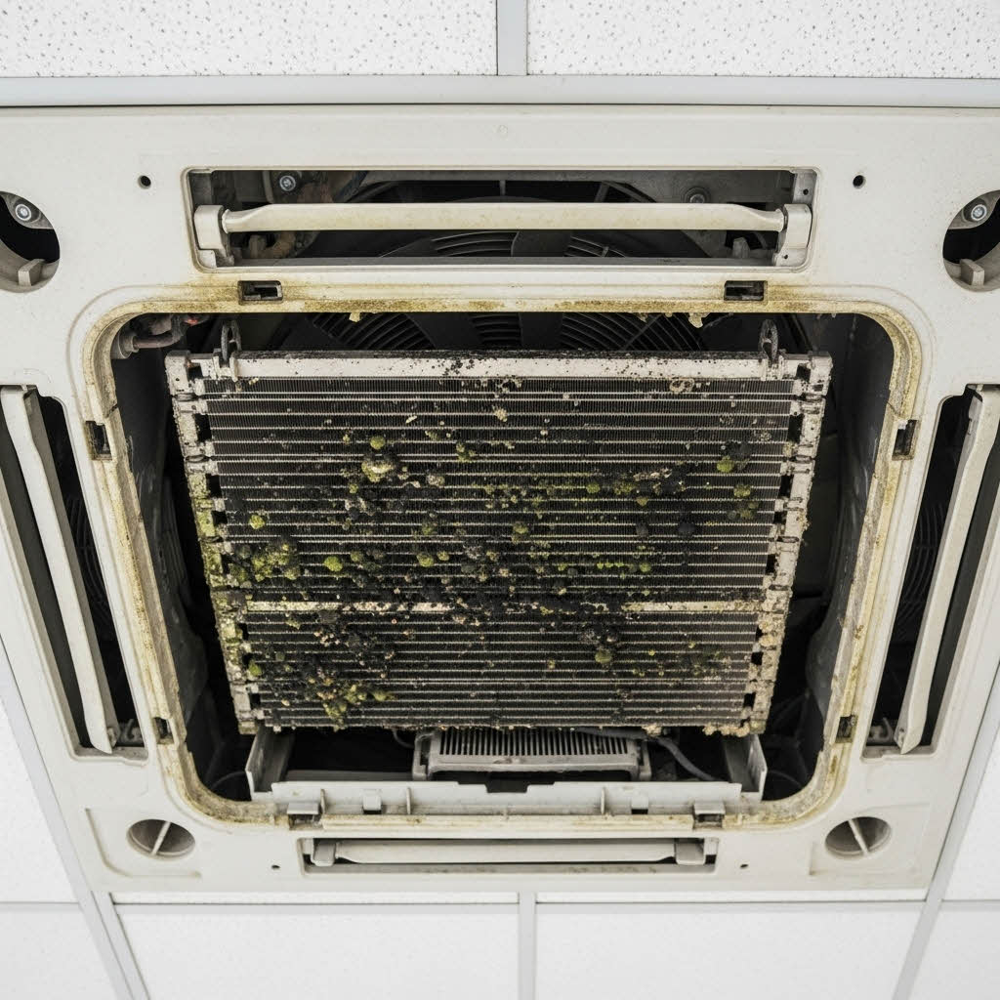
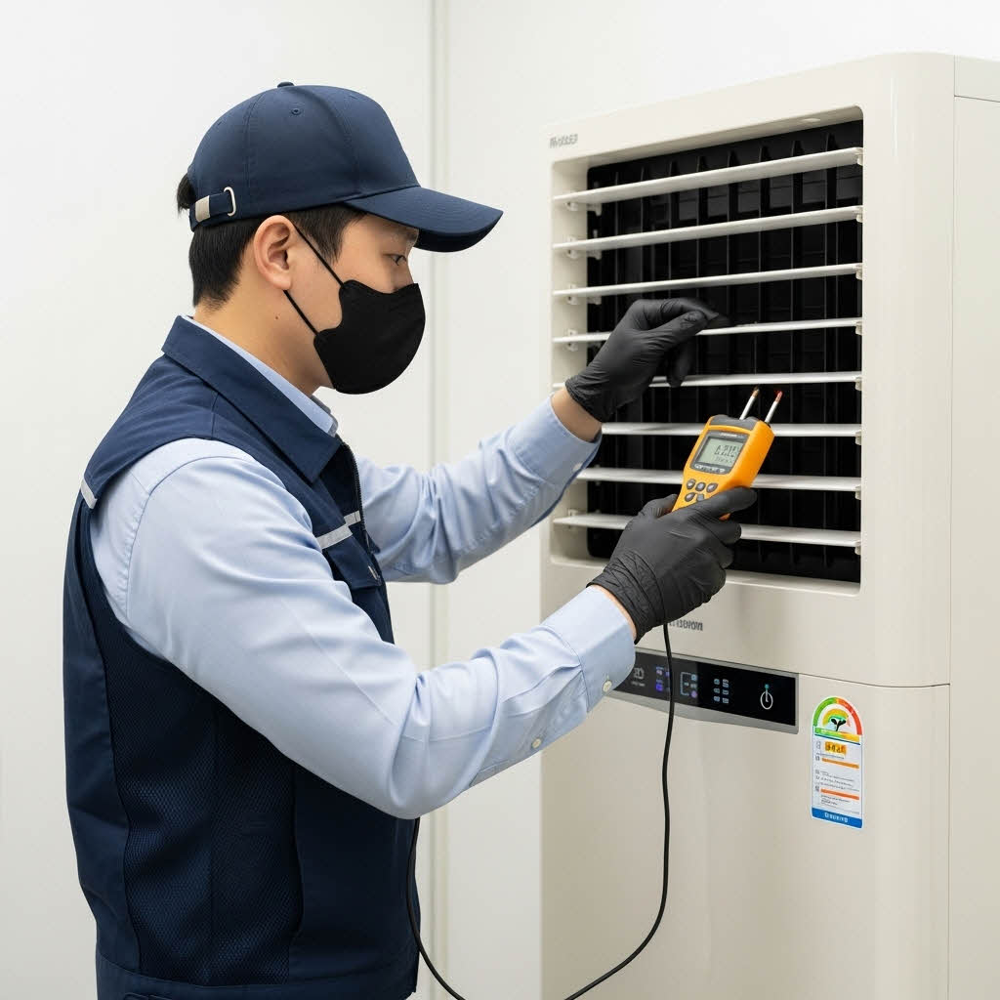
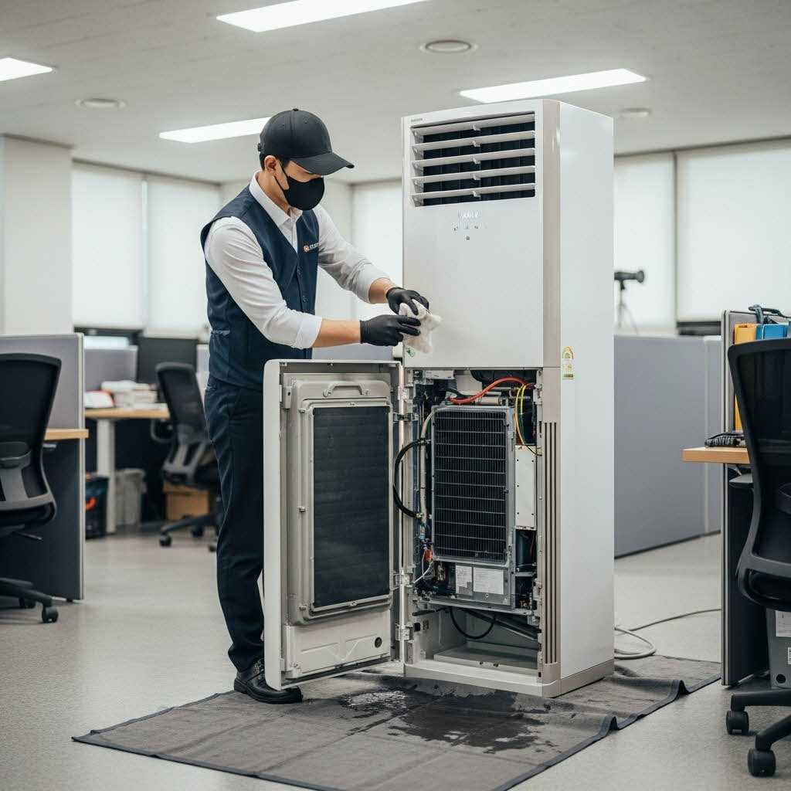
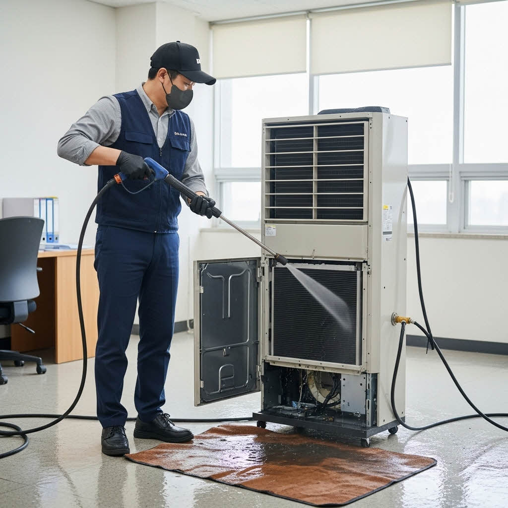
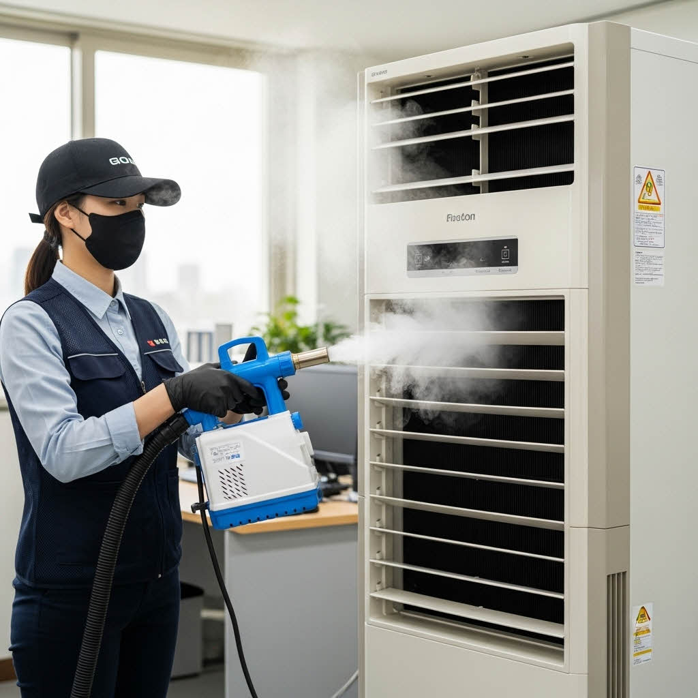
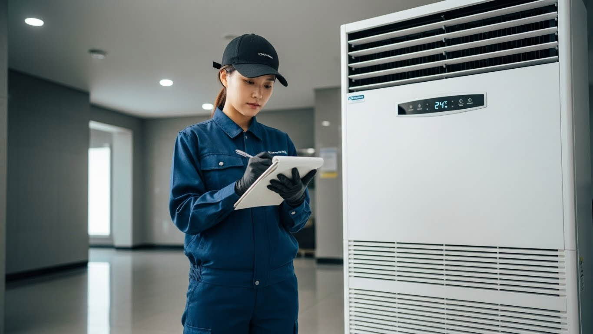

에어컨 위생 관리 솔루션
🍃
🌿
🦠
⚫
🦠
⚫
PURE WIND ZONE
바람 타고 날리는 먼지,
당신의 에어컨은
곰팡이를 뿜습니까?
에어컨 위생 점검 체크리스트
기업 환경에서 공용 에어컨의 위생 상태는 직원들의 건강 및 실내 공기질과 직결됩니다. 아래 체크리스트는 에어컨 위생 상태를 스스로 평가하고, 전문적인 정기 관리가 필요한 시점을 정확히 파악하는 데 사용됩니다.

최종 작동 테스트
최종 작동 테스트
에어컨 위생관리 프로세스
점검 항목 요약 및 위험 신호
- 기본 오염: 필터 표면 먼지 및 슬러지 누적, 송풍구 주변 곰팡이/물때, 드레인 호스 막힘/누수.
- 공기 위험: 가동 시 강한 곰팡이/꿉꿉한 악취 발생, 냉방 효율 저하 (전기료 증가), 공기 흐름 약화.
- 관리 시급: 직원들의 악취 및 호흡기 불만, 비가동 기간 (겨울철) 후 장기간 방치, 필터 청소 주기 미준수.
| 항목 |
확인 사항 (내용) |
이행 |
| 사전 점검 |
에어컨 작동 상태 확인 및 주변 보양 작업(비닐 커버링)을 완료하였는가? |
|
| 분해 (필터/커버) |
프론트 패널, 필터, 그릴 등 외관 부품을 안전하게 분리하였는가? |
|
| 세척 (필터) |
분리된 필터와 그릴의 먼지를 고압수로 제거하고 건조하였는가? |
|
| 세척 (냉각핀) |
친환경 세정제 도포 후 고압 세척기로 냉각핀 사이의 오염을 제거하였는가? |
|
| 세척 (송풍팬) |
송풍팬(블로어)의 곰팡이와 찌든 때를 완벽하게 제거하였는가? |
|
| 세척 (드레인) |
드레인 판(물받이)의 슬라임과 배수 호스 막힘을 해결하였는가? |
|
| 살균 소독 |
내부 UV 살균 및 피톤치드 연무 소독을 진행하였는가? |
|
| 조립 및 확인 |
부품 재조립 후 정상 작동(냉방, 소음 등)을 최종 확인하였는가? |
|
| 특이사항 |
노후화된 부품이나 누수 위험 등 특이사항 발생 시 관리자에게 즉시 보고 |
|
에어컨 위생 체크리스트
기업용 에어컨, 왜 반드시 전문 관리가 필요한가?
기업 내 공용 에어컨은 실내 공기를 순환시키며 습기와 먼지가 축적되는 고위험 위생 구역입니다. 많은 사람이 사용하는 특성상, 에어컨 내부 열교환기(냉각핀)와 송풍 팬은 세균과 곰팡이가 빠르게 번식하기 위한 최적 조건을 갖추게 됩니다.
내부 습기 (결로 현상), 축적된 먼지, 그리고 사용자 손 접촉 (리모컨, 외관) 등은 교차 오염을 지속적으로 유발하며, 이는 호흡기 질환 위험 증가 및 감염의 주요 원인이 됩니다.





실제 현장에서 발견되는 에어컨 오염 사례
단순한 필터 청소 수준의 관리로는 이러한 근본적인 내부 오염 문제 (냉각핀 틈새, 송풍 팬)를 해결할 수 없습니다. 기업은 직원 복지 향상, 위생 리스크 감소, 감염 예방을 위해 전문적인 주기 관리가 필수적입니다.
에어컨 오염의 주요 원인 및 발생 과정
에어컨 내부 오염은 다음 요소들이 복합적으로 작용하여 발생하며, 전문 관리가 가장 높은 RLU 수치를 기록하는 주요 오염 부위를 정확히 진단합니다.
- 습도 증가 (결로): 냉방 작동 시 열교환기에 응결되는 물방울이 곰팡이 번식의 근본적인 원인이 됩니다.
- 먼지/이물질 축적: 실내 먼지가 냉각핀과 팬에 달라붙어 곰팡이와 세균의 영양원 역할을 합니다.
- 사용자 접촉: 리모컨, 조작부, 송풍구 등은 매일 여러 명이 만지는 대표적인 접촉 오염 구간입니다.
- 배수 불량: 드레인 팬에 물이 고이거나 배수 호스가 막혀 물때와 악취를 유발합니다.
- 장기 미사용: 비가동 기간 동안 내부 잔여 습기로 인해 곰팡이가 폭발적으로 번식합니다.
실제 현장에서의 주요 오염 부위 (유형별)
| 에어컨 유형 |
주요 오염 부위 |
오염 특징 및 위험성 |
| 벽걸이형 |
송풍 팬 (블로어 팬), 드레인 호스 출구 |
팬에 곰팡이가 육안으로 쉽게 확인되며, 응축수가 벽을 타고 흐를 위험이 있음. |
| 스탠드형 |
열교환기 중앙 및 하단, 에어 디퓨저 (토출구) |
크기가 커서 오염 면적이 넓고, 하단 깊숙한 곳의 청소가 어려움. |
| 천장형 (시스템) |
열교환기 전면부, 드레인 팬 (물받이), 덕트 입구 |
천장에 매립되어 오염 확인이 어렵고, 드레인 펌프 불량 시 누수 위험이 높음. |
에어컨 전문 분해·소독 프로세스
전문 업체는 제조사별 구조 특성을 기반으로, 단순 표면 청소가 아닌 정밀 분해·고압 세척·살균·건조·재조립의 5단계 전문 프로세스를 적용하여 근본적인 위생 문제를 해결합니다.
1단계 — ATP 바이오 오염도 진단
ATP 측정기를 활용해 송풍구, 리모컨, 필터 등 고접촉 구역의 오염도를 객관적인 수치(RLU)로 측정합니다. 초기 오염도와 최종 개선도를 고객사에 데이터로 제공하여 과학적인 위생 관리가 가능하도록 하며, 위험 기준치 초과 항목을 별도 표시하여 집중 관리합니다.

2단계 — 에어컨 구조 분해 및 내부 차폐
커버, 필터, 송풍 팬 등 탈부착 가능 항목을 모두 분리합니다. 열교환기, 드레인 팬 등 핵심 부품이 노출되면, 고압 세척 시 물이 튀지 않도록 주변을 완벽하게 차폐(보양)합니다.
* 벽걸이형은 블로어 팬을 완전히 분리하거나 전용 세척 커버를 이용하며, 천장형은 천장 보양 작업이 필수적으로 요구됩니다.

3단계 — 고강도 고압 세척 및 곰팡이 제거
에어컨 전용 친환경 세정제와 고압 세척기를 사용하여 열교환기 깊숙한 틈새와 송풍 팬의 곰팡이와 먼지를 완전히 제거합니다. 특히, 드레인 라인 막힘을 확인하고 뚫어주어 응축수가 원활하게 배출되도록 합니다.

4단계 — 살균 및 재발 방지 소독
곰팡이, 세균, 바이오필름이 제거된 내부에 친환경 소독제를 사용하여 2차 살균을 진행합니다. 냄새 요소(부패균)를 분해하여 내부 공기질을 개선하고, 항균 처리를 추가하여 세균 재번식을 억제합니다.

5단계 — 사후 ATP 재측정 및 보고서 제공
작업 완료 후 동일 지점을 재측정하여 개선 수치를 비교합니다. 작업 전/후 사진, ATP 데이터, 권장 관리 주기 등이 포함된 보고서를 제공하며, 관리 이력 데이터는 향후 정기 관리 주기 추천에 활용됩니다.

에어컨 위생 관리 권장 주기
기업의 규모, 사용 패턴, 에어컨 수량에 따라 가장 효율적인 전문 관리 주기를 권장합니다.
- 연 1회 (냉방 시작 전): 벽걸이형/스탠드형 다수 일반 사무실 (비용 효율적 관리)
- 반기 1회: 천장형 설치 공간, 사용량이 높은 공간 (회의실, 강의실), 습도 높은 환경
- 분기 1회: 천장형/스탠드형이 주를 이루는 제조업 공장, 병원·의료기관, 24시간 운영 시설
- 월 1회 + ATP 리포트: 감염 예방이 중요하고 회전율 높은 장소 (콜센터, 대형 병원 로비 등)
에어컨 관리 후 기대 효과
정기적인 전문 관리 후 기업은 단순한 청결 유지를 넘어, 다음과 같은 실질적인 개선 효과를 얻을 수 있습니다.
- 세균 수치(RLU) 평균 70~95% 감소
- 악취 및 곰팡이 냄새 제거를 통한 실내 공기질 획기적 개선
- 냉각핀 오염 제거를 통한 냉방 효율 정상화 및 전기료 절감
- 직원들의 쾌적한 근무 환경 만족도 상승 및 호흡기 질환 예방
- 경영진 평가에 직접 활용 가능한 위생 보고서 제공
왜 클린메이트를 선택해야 하는가?
제조사별 맞춤 전문 관리 – LG, 삼성, 위니아, 미쯔비스, 케리어 등 모든 제조사의 구조적 특성을 정확히 파악하여 최적화된 세척·항균 프로세스를 제공합니다.
과학적 데이터 기반 관리 – ATP 바이오 측정으로 작업 전후 오염도를 수치로 증명하며 위생 점검 시 근거자료로 활용됩니다.
장비 수명 연장 – 곰팡이 제거 및 예방 정비로 고장률을 낮추고 전력 소비를 절감합니다.
290개 이상 협력사의 신뢰 – 빌딩, 공장, 사무실, 특급호텔, 프랜차이즈, 병원 등에서 10년간 검증된 기술력.
맞춤형 관리 주기 설계 – 환경, 사용빈도, 사용인원, 공기질에 맞춰 최적의 관리주기를 제안합니다.
에어컨은 단순히 바람의 역할이 아니라
고객 신뢰와 공기질을 책임지는 핵심 설비입니다.
클린메이트는 10년의 현장 경험과 과학적 데이터를 바탕으로
최고의 위생 관리 솔루션을 제공합니다.
식품안전 우선
친환경 세제
데이터 기반 관리
10년 기술력

VVIP 대응팀